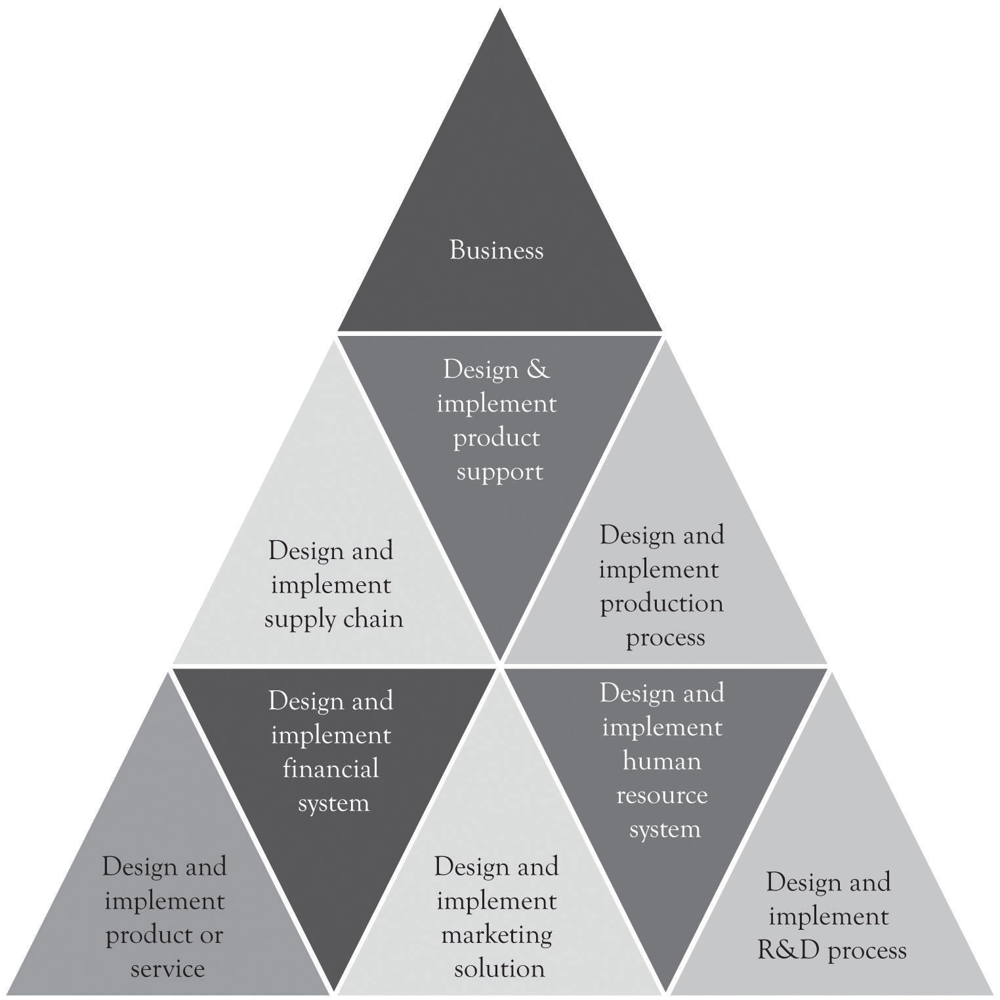
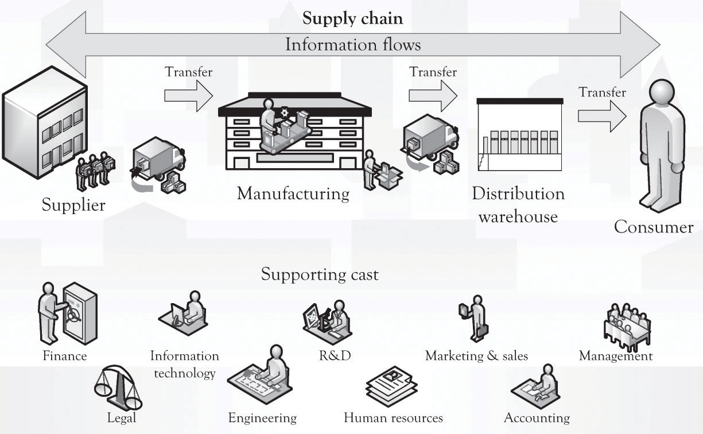

Once the business model has been created and the business plan has been developed, the hard work begins. In most situations, everything is new and needs to be built up from scratch. The entire supply chain has to be built and tested to insure that orders for products and services can be accepted, filled, and supported. This is the Building-the-Business phase and it is vital to a successful business launch. As illustrated in Note 13.1 "Key Business Questions Before Launch", several key business questions must be answered before launching the business.
The hard part is to install initial processes or systems to make the business work, and that is where project management is essential. We use the term project management system loosely, since in many instances the system can be self-contained and organized in the mind of the entrepreneur. Nevertheless, the hard part involves building the business to produce the product and deliver the service. This requires project management. Even if you have plans for manufacturing, marketing, and distributing the product, you still need to have a process to accomplish or execute the plan.
Figure 13.1 Key Management Activities During the Business Life Cycle

In many instances, entrepreneurs turn to turnkey systems for accounting and inventory management. Turnkey systemsReady-to-go-software, ready-to-go-processes, or both for running a business. are ready-to-go-software, ready-to-go-processes, or both for running a business. Time and effort is still needed to identify the turnkey solution and then more time and effort is required to actually implement it. Some sort of mechanism is necessary for determining what solution fits the business, how the system will be implemented, who will operate the system, and how it fits in with the other business activities. Even if the so-called turnkey solutions have been identified for accounting and inventory management, additional planning is needed for implementing and creating business processes for installing and running the system.
Project managementThe tool for executing the plan and installing the business processes. is the tool for executing the plan and installing the business processes. It helps to detail what tasks will be accomplished, who will be involved in completing the tasks, and when tasks should start and finish. The minimal tasks that need to be accomplished for a business to start or launch include marketing and sales, production and operations, staffing, and accounting. In addition, some sort of research and development (R&D) process needs to be initiated soon after launch in order to re-prime the pump. These are the first steps in designing organizations for the long term.
Organizational designInvolves the simultaneous integration of the tasks that need to be completed by overlaying some organizational structure that uses a blend of technology and people to fulfill the organizational mission. involves the simultaneous integration of the tasks that need to be completed by overlaying some type of organizational structure that uses a blend of technology and people to fulfill the organizational mission.Adapted from Leavitt (1965). Here are the Building-the-Business functions and critical questions that need to be in place before or soon after launch:
Need a marketing function or system:
Need an operations or production function or system:
Need a human resource function or system:
Need an accounting function or system:
Need an R&D function or system (immediately after launch):
Need legal counsel and assistance:
Even the simplest start-up company has to accomplish the functions described above in some capacity. These systems may be in the mind of the entrepreneur and also executed by the entrepreneur, but they are still necessary for survival. There are other system processes that need to be in place as illustrated in Figure 13.2 "Systems Emerging Over Time". These systems or functions typically emerge and evolve as the business grows and prospers. A good way to consider the complexity of a large business is to think about the components of the supply chain. This is again illustrated in Figure 13.3 "Large Organizations Need Many Systems and Structures" where a number of critical processes need to be in place for a large and growing supply chain. In larger organizations, these activities are part of a more formal approach. The formal approach is project management. If a business only has one employee, the entrepreneur, then all the systems will be conceptualized and executed by the entrepreneur. However, even in a small, one-person operation, understanding and implementing some type of project management is necessary in order to deal with the complexity of the start-up process. Just having a checklist of things to do and things that have been accomplished will help in dealing with the overwhelming complexity of launching a start-up.
Figure 13.2 Systems Emerging Over Time
Figure 13.3 Large Organizations Need Many Systems and Structures
